الاستماع لسورة الدخان بصوت جميع القراء
اختر القارئ للاستماع إلى سورة الدخان بصوته بصيغة MP3
محمد عبدالحكيم سعيد العبداللهعبدالرحمن الشحاتعبدالرحمن الماجدإدريس أبكرعادل الكلبانيمشاري العفاسيأحمد بن علي العجميإبراهيم الأخضرأكرم العلاقميالزين محمد أحمدأنس العماديمحمد أيوببدر التركيبندر بليلةعبدالباسط عبدالصمد يوسف بن نوح أحمدنورين محمد صديقأحمد النفيسبيشه وا قادر الكرديمحمد خليل القارئمحمد الأمين قنيوةخالد القحطانيناصر القطاميياسر القرشي
يوسف بن نوح أحمدنورين محمد صديقأحمد النفيسبيشه وا قادر الكرديمحمد خليل القارئمحمد الأمين قنيوةخالد القحطانيناصر القطاميياسر القرشي
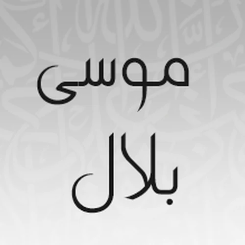
موسى بلالمحمود علي البناعبدالله بصفرصلاح بو خاطرالدوكالي محمد العالمالفاتح محمد الزبيرهاشم أبو دلالهيثم الدخينصالح الهبدانهاني الرفاعي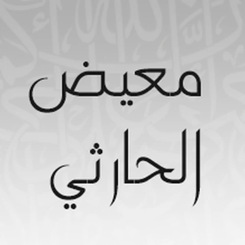
معيض الحارثيحاتم فريد الواعرأحمد الحواشيصابر عبدالحكممحمود خليل الحصريإبراهيم كشيدان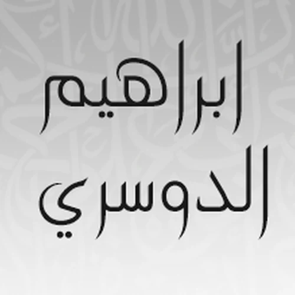
إبراهيم الدوسريجمال شاكر عبداللهجمعان العصيمي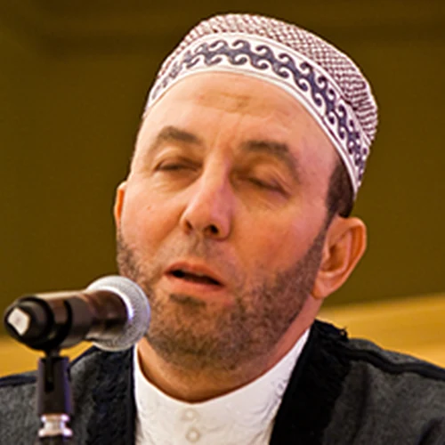
محمد جبريلخالد الجليلإبراهيم الجرميخالد عبدالكافي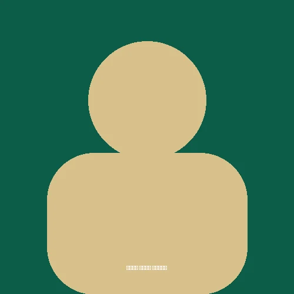
خالد كريم محمديعبدالله الخلف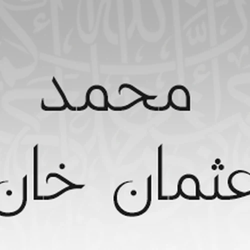
محمد عثمان خانالعيون الكوشيمصطفى اللاهونيمحمد اللحيدان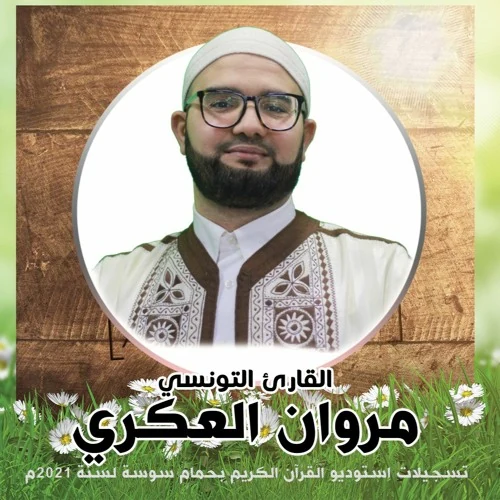
مروان العكريمحمد عبدالكريممحمد سايدمحمد الفقيهمحمد المحيسنيمحمد صديق المنشاوي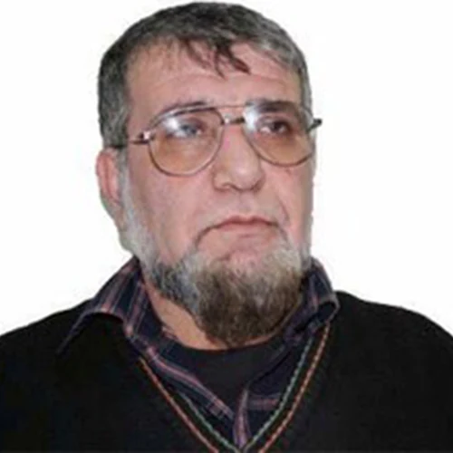
خالد المهنامحمود الرفاعيعبدالله المطرود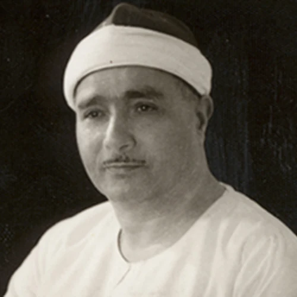
مصطفى إسماعيلياسر المزروعينبيل الرفاعينعمة الحسانناصر الماجد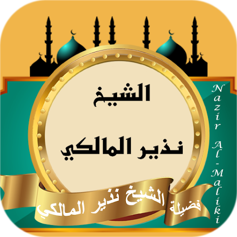
نذير المالكييوسف بن نوح أحمدنورين محمد صديقأحمد النفيسبيشه وا قادر الكرديمحمد خليل القارئمحمد الأمين قنيوةخالد القحطانيناصر القطاميياسر القرشي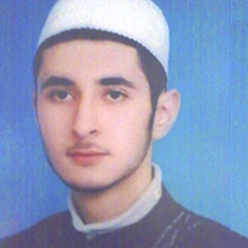
مصطفى رعد العزاوي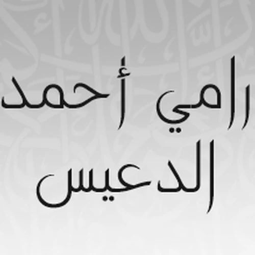
رامي الدعيس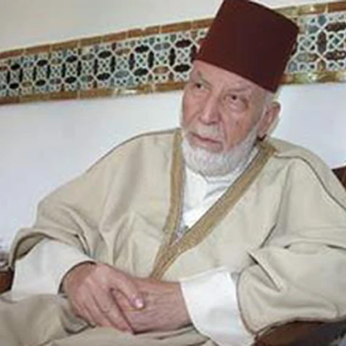
محمد رشاد الشريفعادل ريانصلاح البديرسعد الغامدي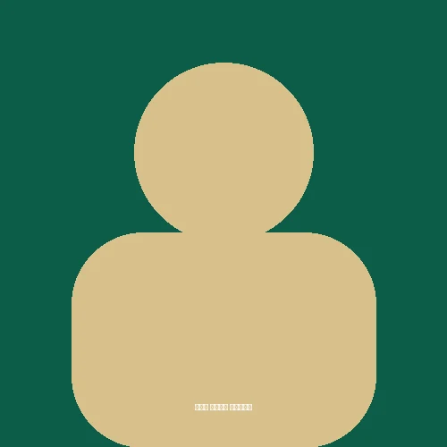
سيد أحمد هاشميسلمان الصديقسعد المقرن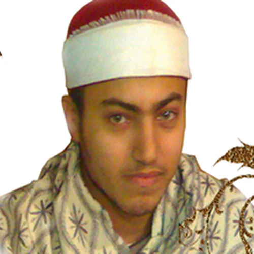
أحمد صابرصلاح الهاشمياسر سلامة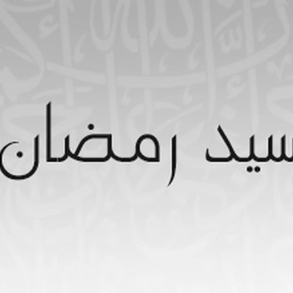
سيد رمضانعبدالرحمن السديسمحمد صالح عالم شاهصالح الشمرانيأبو بكر الشاطريمحمود الشيميسهل ياسينسعود الشريمرشيد صوفيشيرزاد عبدالرحمن طاهر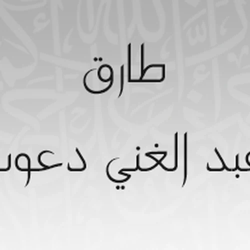
طارق عبدالغني دعوبمحمد الطبلاويعبدالباري الثبيتيخليفة الطنيجيتوفيق الصايغ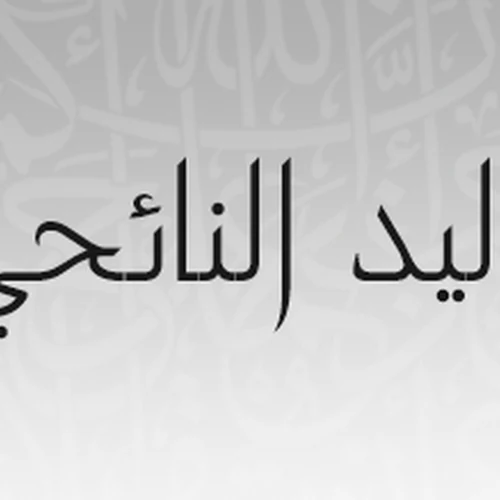
وليد النائحيوديع اليمني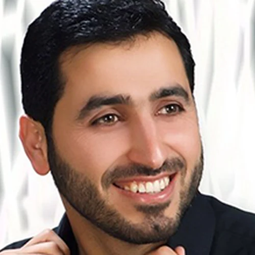
يحيى حواياسر الدوسرييوسف بن نوح أحمدزكي داغستانيإسلام صبحيمنصور السالميماجد الزاملأحمد خليل شاهينعبد الله خياطماهر المعيقليعبد الله الجهنيعبد العزيز الزهرانيعلي جابر